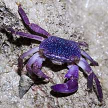
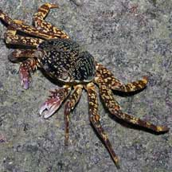

|
|
| crabs text index | photo index |
| Phylum Arthropoda > Subphylum Crustacea > Class Malacostraca > Order Decapoda > Brachyurans |
| Grapsid
crabs Family Grapsidae updated Dec 2019
Where seen? Small grapsid crabs are commonly seen on many of our rocky shores and mangroves, especially at night. They are among the colourful crabs you might see even at high tide. But they are more active at night and fast moving. During the day, you will rarely see more than a purplish hairy leg peeking out from a crevice! The larger species are sometimes seen on the offshore Southern Islands. Features: Body width 4-6cm. Grapsid crabs are adapted for scrambling over rocks and other slippery surfaces. Many can stay out of the water for some time. Grapsid crabs are also sometimes called Shore crabs. They have well-developed hooks on the tips of their long legs that grip these surfaces. Their bodies and legs are flattened, allowing them to squeeze deep into narrow cracks and crevices. In some species, males have larger pincers than females. The Rafting crab (Plagusia squamosa) is sometimes mistaken for a grapsid crab. But it belongs to another family. What do they eat? Grapsid crabs are scavengers and will eat almost anything. They also eat seaweed. |
| Some Grapsid crabs on Singapore shores |
 Purple climber crab |
 Sally-light-foot crab |
| Family
Grapsidae recorded for Singapore from Wee Y.C. and Peter K. L. Ng. 1994. A First Look at Biodiversity in Singapore **Ng, Peter K. L. & N. Sivasothi, 1999. A Guide to the Mangroves of Singapore II (Animal Diversity). ***Ng, Peter K. L. and Daniele Guinot and Peter J. F. Davie, 2008. Systema Brachyurorum: Part 1. An annotated checklist of extant Brachyuran crabs of the world. in red are those listed among the threatened animals of Singapore from Ng, P. K. L. & Y. C. Wee, 1994. The Singapore Red Data Book: Threatened Plants and Animals of Singapore
|
Links
|